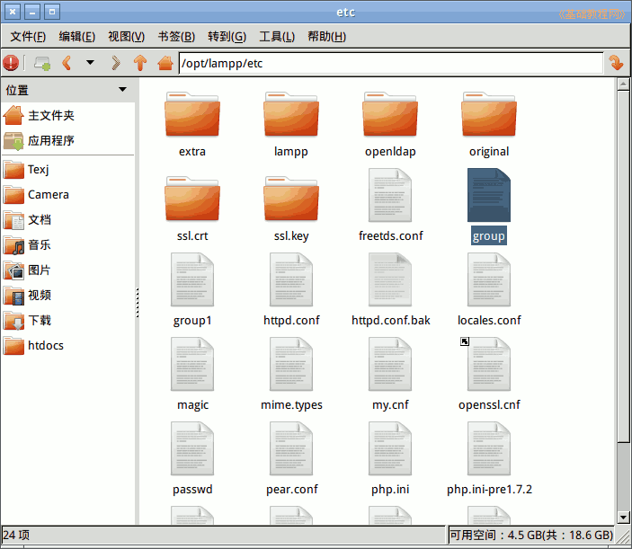

proftpd 批量创建虚拟用户登录
作者：TeliuTe 来源：基础教程网
三十一、创建proftpd多个虚拟用户 返回目录 下一课
proftpd 是ftp服务器，如何批量创建多个虚拟登录用户，下面我们来看一个练习；
1、创建proftpd虚拟用户
1）首先安装好proftpd，这里是用XAMPP里自带的，程序文件在/opt/lampp/bin里，配置文件在/opt/lampp/etc里；
2）创建虚拟用户，先切换到root管理员用户，提示符从$转变成#，再用cd命令切换到 ftpasswd 所在的 bin 文件夹；
$ sudo su
# cd /opt/lampp/bin
3）输入创建虚拟用户组的ftpasswd命令，假设添加test1和test2两个用户，以便查看文件的格式；
./ftpasswd --group --name=stftp --gid=2000 --member=test1 --member=test2 --file=/opt/lampp/etc/group
参数说明，--group 表示创建用户组，
--name=stftp 表示用户组名是stftp，
--gid设到组号，
--member是添加到改组的成员，
--file=/opt/lampp/etc/group是组文件所在的文件夹和文件名，
但这个命令只能替换组用户，不能添加组用户，需要一次把所有用户都写到命令行；
4）这时到文件夹/opt/lampp/etc/ 中，就可以看到一个新生成的文件group，用管理员身份打开可以看到里面的内容，自己可以编辑修改；

stftp:x:2000:test1,test2
stftp是虚拟用户组名，2000是组号，后面的test1和test2是虚拟用户
5）再输入创建虚拟用户的命令还是用ftpasswd命令，只是参数不同，改成创建用户的参数；
echo "test1psw" | ./ftpasswd --passwd --file=/opt/lampp/etc/passwd
--name=test1 --uid=2000 --gid=2000 --home=/opt/lampp/htdocs/ftp/test1/
--shell=/sbin/nologin --stdin
echo 这里把用户密码管道输入，
--passwd --file是设置用户密码所在的文件，
--name 是设置用户名，
--uid 是设置用户uid号，
--home 是用户的主目录，
最后的--stdin 是从键盘输入密码，这里从前面的echo导入密码；
6）到文件夹/opt/lampp/etc/ 中，就可以看到一个新生成的文件group，用管理员身份打开可以看到里面的内容，密码都是加密过的；
test1:$1$qqO5H1b7$ykHLxCSndy08UIlUA7edU0:2000:2000::/opt/lampp/htdocs/ftp/test1:/sbin/nologin
test1是虚拟用户名，前面2000是用户uid，后面的是组号，再后面是用户主目录，只能远程登录
添加其他用户可以继续输入这个命令，换一下里面的用户名、密码、uid，例如
echo "test2psw" | ./ftpasswd --passwd --file=/opt/lampp/etc/passwd
--name=test2 --uid=2001 --gid=2000 --home=/opt/lampp/htdocs/ftp/test2/
--shell=/sbin/nologin --stdin
7）了解了创建用户的命令后，我们可以创建一个shell脚本批量创建用户，每一行创建一个用户；
下载范例
8）创建好用户后，还需要把用户添加到group组文件里，用户之间用逗号分隔，也可以用calc电子表格和文本编辑器的来实现；
下载范例
9）再用一个脚本来创建所有用户的主目录，并将属主改成对应的用户，基本命令是；
mkdir /opt/lampp/htdocs/ftp/8-1a1 && chown -R 2001:2000 /opt/lampp/htdocs/ftp/8-1a1
下载范例
10）虚拟用户组、虚拟用户、用户主目录创建好以后，下一步修改proftpd的配置文件，在最后添加以下内容，以便允许虚拟用户登录；
#验证是否允许用户登录文件顺序
AuthOrder mod_auth_file.c
AuthUserFile /opt/lampp/etc/passwd
AuthGroupFile /opt/lampp/etc/group
#限定登录用户到自己的主目录
DefaultRoot ~
下载范例
本节学习了在Ubuntu中批量创建proftpd虚拟用户的基本操作，如果你成功地完成了练习，请继续学习下一课内容；
返回目录 下一课
本教程由86团学校TeliuTe制作|著作权所有
基础教程网：http://teliute.org
美丽的校园……

转载和引用本站内容，请保留作者和本站链接。